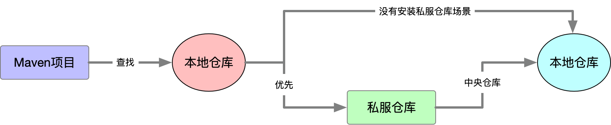
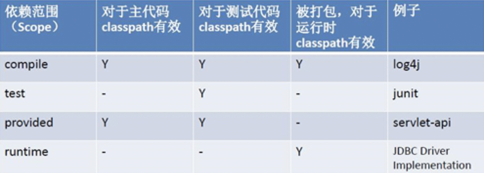
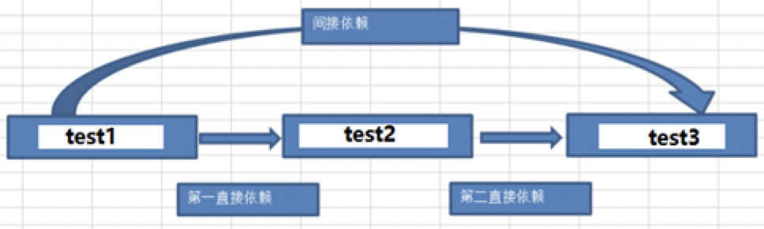

<!DOCTYPE html><html lang="zh-CN" data-theme="light"><head><meta charset="UTF-8"><meta http-equiv="X-UA-Compatible" content="IE=edge"><meta name="viewport" content="width=device-width, initial-scale=1.0,viewport-fit=cover"><title>Maven | Maple's  Blog</title><meta name="author" content="Maple"><meta name="copyright" content="Maple"><meta name="format-detection" content="telephone=no"><meta name="theme-color" content="#ffffff"><meta name="description" content="MavenMaven 是什么Maven 是一个项目管理工具，它包含了一个项目对象模型（Project Object Model），反映在配置中，就是一个 pom.xml 文件。它是一组标准集合，一个项目的生命周期、一个依赖管理系统，另外还包括定义在项目生命周期阶段的插件(plugin)以及目标(goal)。 当我们使用 Maven 的使用，通过一个自定义的项目对象模型pom.xml 来详细描述我们">
<meta property="og:type" content="article">
<meta property="og:title" content="Maven">
<meta property="og:url" content="https://maple_eitba.gitee.io/maple/2023/11/07/Maven/index.html">
<meta property="og:site_name" content="Maple&#39;s  Blog">
<meta property="og:description" content="MavenMaven 是什么Maven 是一个项目管理工具，它包含了一个项目对象模型（Project Object Model），反映在配置中，就是一个 pom.xml 文件。它是一组标准集合，一个项目的生命周期、一个依赖管理系统，另外还包括定义在项目生命周期阶段的插件(plugin)以及目标(goal)。 当我们使用 Maven 的使用，通过一个自定义的项目对象模型pom.xml 来详细描述我们">
<meta property="og:locale" content="zh_CN">
<meta property="og:image" content="https://maple_eitba.gitee.io/maple/top_img/maven.jpg">
<meta property="article:published_time" content="2023-11-07T06:16:17.000Z">
<meta property="article:modified_time" content="2024-03-18T12:51:27.607Z">
<meta property="article:author" content="Maple">
<meta property="article:tag" content="Maven">
<meta name="twitter:card" content="summary">
<meta name="twitter:image" content="https://maple_eitba.gitee.io/maple/top_img/maven.jpg"><link rel="shortcut icon" href="/maple/img/favicon.jpg"><link rel="canonical" href="https://maple_eitba.gitee.io/maple/2023/11/07/Maven/index.html"><link rel="preconnect" href="//cdn.jsdelivr.net"/><link rel="stylesheet" href="/maple/css/index.css"><link rel="stylesheet" href="https://cdn.jsdelivr.net/npm/@fortawesome/fontawesome-free/css/all.min.css" media="print" onload="this.media='all'"><link rel="stylesheet" href="https://cdn.jsdelivr.net/npm/@fancyapps/ui/dist/fancybox/fancybox.min.css" media="print" onload="this.media='all'"><script>const GLOBAL_CONFIG = { 
  root: '/maple/',
  algolia: undefined,
  localSearch: {"path":"/maple/search.xml","preload":false,"top_n_per_article":1,"unescape":false,"languages":{"hits_empty":"找不到您查询的内容：${query}","hits_stats":"共找到 ${hits} 篇文章"}},
  translate: {"defaultEncoding":1,"translateDelay":0,"msgToTraditionalChinese":"繁","msgToSimplifiedChinese":"簡"},
  noticeOutdate: undefined,
  highlight: {"plugin":"highlighjs","highlightCopy":true,"highlightLang":true,"highlightHeightLimit":800},
  copy: {
    success: '复制成功',
    error: '复制错误',
    noSupport: '浏览器不支持'
  },
  relativeDate: {
    homepage: false,
    post: false
  },
  runtime: '',
  dateSuffix: {
    just: '刚刚',
    min: '分钟前',
    hour: '小时前',
    day: '天前',
    month: '个月前'
  },
  copyright: {"limitCount":22,"languages":{"author":"作者: Maple","link":"链接: ","source":"来源: Maple's  Blog","info":"著作权归作者所有。商业转载请联系作者获得授权，非商业转载请注明出处。"}},
  lightbox: 'fancybox',
  Snackbar: undefined,
  source: {
    justifiedGallery: {
      js: 'https://cdn.jsdelivr.net/npm/flickr-justified-gallery/dist/fjGallery.min.js',
      css: 'https://cdn.jsdelivr.net/npm/flickr-justified-gallery/dist/fjGallery.min.css'
    }
  },
  isPhotoFigcaption: false,
  islazyload: false,
  isAnchor: false,
  percent: {
    toc: true,
    rightside: true,
  }
}</script><script id="config-diff">var GLOBAL_CONFIG_SITE = {
  title: 'Maven',
  isPost: true,
  isHome: false,
  isHighlightShrink: false,
  isToc: true,
  postUpdate: '2024-03-18 20:51:27'
}</script><noscript><style type="text/css">
  #nav {
    opacity: 1
  }
  .justified-gallery img {
    opacity: 1
  }

  #recent-posts time,
  #post-meta time {
    display: inline !important
  }
</style></noscript><script>(win=>{
    win.saveToLocal = {
      set: function setWithExpiry(key, value, ttl) {
        if (ttl === 0) return
        const now = new Date()
        const expiryDay = ttl * 86400000
        const item = {
          value: value,
          expiry: now.getTime() + expiryDay,
        }
        localStorage.setItem(key, JSON.stringify(item))
      },

      get: function getWithExpiry(key) {
        const itemStr = localStorage.getItem(key)

        if (!itemStr) {
          return undefined
        }
        const item = JSON.parse(itemStr)
        const now = new Date()

        if (now.getTime() > item.expiry) {
          localStorage.removeItem(key)
          return undefined
        }
        return item.value
      }
    }
  
    win.getScript = url => new Promise((resolve, reject) => {
      const script = document.createElement('script')
      script.src = url
      script.async = true
      script.onerror = reject
      script.onload = script.onreadystatechange = function() {
        const loadState = this.readyState
        if (loadState && loadState !== 'loaded' && loadState !== 'complete') return
        script.onload = script.onreadystatechange = null
        resolve()
      }
      document.head.appendChild(script)
    })
  
    win.getCSS = (url,id = false) => new Promise((resolve, reject) => {
      const link = document.createElement('link')
      link.rel = 'stylesheet'
      link.href = url
      if (id) link.id = id
      link.onerror = reject
      link.onload = link.onreadystatechange = function() {
        const loadState = this.readyState
        if (loadState && loadState !== 'loaded' && loadState !== 'complete') return
        link.onload = link.onreadystatechange = null
        resolve()
      }
      document.head.appendChild(link)
    })
  
      win.activateDarkMode = function () {
        document.documentElement.setAttribute('data-theme', 'dark')
        if (document.querySelector('meta[name="theme-color"]') !== null) {
          document.querySelector('meta[name="theme-color"]').setAttribute('content', '#0d0d0d')
        }
      }
      win.activateLightMode = function () {
        document.documentElement.setAttribute('data-theme', 'light')
        if (document.querySelector('meta[name="theme-color"]') !== null) {
          document.querySelector('meta[name="theme-color"]').setAttribute('content', '#ffffff')
        }
      }
      const t = saveToLocal.get('theme')
    
          if (t === 'dark') activateDarkMode()
          else if (t === 'light') activateLightMode()
        
      const asideStatus = saveToLocal.get('aside-status')
      if (asideStatus !== undefined) {
        if (asideStatus === 'hide') {
          document.documentElement.classList.add('hide-aside')
        } else {
          document.documentElement.classList.remove('hide-aside')
        }
      }
    
    const detectApple = () => {
      if(/iPad|iPhone|iPod|Macintosh/.test(navigator.userAgent)){
        document.documentElement.classList.add('apple')
      }
    }
    detectApple()
    })(window)</script><link rel="stylesheet" href="/css/maple_background.css"><meta name="generator" content="Hexo 5.4.2"></head><body><div id="loading-box"><div class="loading-left-bg"></div><div class="loading-right-bg"></div><div class="spinner-box"><div class="configure-border-1"><div class="configure-core"></div></div><div class="configure-border-2"><div class="configure-core"></div></div><div class="loading-word">加载中...</div></div></div><script>const preloader = {
  endLoading: () => {
    document.body.style.overflow = '';
    document.getElementById('loading-box').classList.add("loaded")
  },
  initLoading: () => {
    document.body.style.overflow = 'hidden';
    document.getElementById('loading-box').classList.remove("loaded")
  }
}

preloader.initLoading()
window.addEventListener('load',()=> { preloader.endLoading() })

if (false) {
  document.addEventListener('pjax:send', () => { preloader.initLoading() })
  document.addEventListener('pjax:complete', () => { preloader.endLoading() })
}</script><div id="sidebar"><div id="menu-mask"></div><div id="sidebar-menus"><div class="avatar-img is-center"></div><div class="sidebar-site-data site-data is-center"><a href="/maple/archives/"><div class="headline">文章</div><div class="length-num">48</div></a><a href="/maple/tags/"><div class="headline">标签</div><div class="length-num">43</div></a><a href="/maple/categories/"><div class="headline">分类</div><div class="length-num">13</div></a></div><hr/><div class="menus_items"><div class="menus_item"><a class="site-page" href="/maple/"><i class="fa-fw fas fa-home"></i><span> 首页</span></a></div><div class="menus_item"><a class="site-page group" href="javascript:void(0);"><i class="fa-fw fas fa-blog"></i><span> 博文</span><i class="fas fa-chevron-down"></i></a><ul class="menus_item_child"><li><a class="site-page child" href="/maple/categories/"><i class="fa-fw fa fa-archive"></i><span> 分类</span></a></li><li><a class="site-page child" href="/maple/tags/"><i class="fa-fw fa fa-tags"></i><span> 标签</span></a></li><li><a class="site-page child" href="/maple/archives/"><i class="fa-fw fa fa-folder-open"></i><span> 归档</span></a></li></ul></div><div class="menus_item"><a class="site-page group" href="javascript:void(0);"><i class="fa-fw fas fa-mug-hot"></i><span> 休闲</span><i class="fas fa-chevron-down"></i></a><ul class="menus_item_child"><li><a class="site-page child" href="/maple/photos/"><i class="fa-fw fa fa-camera-retro"></i><span> 摄影</span></a></li><li><a class="site-page child" href="/maple/movies/"><i class="fa-fw fas fa-video"></i><span> 电影</span></a></li></ul></div><div class="menus_item"><a class="site-page group" href="javascript:void(0);"><i class="fa-fw fas fa-running"></i><span> 体育</span><i class="fas fa-chevron-down"></i></a><ul class="menus_item_child"><li><a class="site-page child" href="/maple/yuqiu/"><i class="fa-fw fas fa-volleyball-ball"></i><span> 羽毛球</span></a></li></ul></div><div class="menus_item"><a class="site-page" href="/maple/about/"><i class="fa-fw fas fa-user"></i><span> 笔者</span></a></div></div></div></div><div class="post" id="body-wrap"><header class="post-bg" id="page-header" style="background-image: url('/maple/top_img/maven.jpg')"><nav id="nav"><span id="blog-info"><a href="/maple/" title="Maple's  Blog"><span class="site-name">Maple's  Blog</span></a></span><div id="menus"><div id="search-button"><a class="site-page social-icon search" href="javascript:void(0);"><i class="fas fa-search fa-fw"></i><span> 搜索</span></a></div><div class="menus_items"><div class="menus_item"><a class="site-page" href="/maple/"><i class="fa-fw fas fa-home"></i><span> 首页</span></a></div><div class="menus_item"><a class="site-page group" href="javascript:void(0);"><i class="fa-fw fas fa-blog"></i><span> 博文</span><i class="fas fa-chevron-down"></i></a><ul class="menus_item_child"><li><a class="site-page child" href="/maple/categories/"><i class="fa-fw fa fa-archive"></i><span> 分类</span></a></li><li><a class="site-page child" href="/maple/tags/"><i class="fa-fw fa fa-tags"></i><span> 标签</span></a></li><li><a class="site-page child" href="/maple/archives/"><i class="fa-fw fa fa-folder-open"></i><span> 归档</span></a></li></ul></div><div class="menus_item"><a class="site-page group" href="javascript:void(0);"><i class="fa-fw fas fa-mug-hot"></i><span> 休闲</span><i class="fas fa-chevron-down"></i></a><ul class="menus_item_child"><li><a class="site-page child" href="/maple/photos/"><i class="fa-fw fa fa-camera-retro"></i><span> 摄影</span></a></li><li><a class="site-page child" href="/maple/movies/"><i class="fa-fw fas fa-video"></i><span> 电影</span></a></li></ul></div><div class="menus_item"><a class="site-page group" href="javascript:void(0);"><i class="fa-fw fas fa-running"></i><span> 体育</span><i class="fas fa-chevron-down"></i></a><ul class="menus_item_child"><li><a class="site-page child" href="/maple/yuqiu/"><i class="fa-fw fas fa-volleyball-ball"></i><span> 羽毛球</span></a></li></ul></div><div class="menus_item"><a class="site-page" href="/maple/about/"><i class="fa-fw fas fa-user"></i><span> 笔者</span></a></div></div><div id="toggle-menu"><a class="site-page" href="javascript:void(0);"><i class="fas fa-bars fa-fw"></i></a></div></div></nav><div id="post-info"><h1 class="post-title">Maven</h1><div id="post-meta"><div class="meta-firstline"><span class="post-meta-date"><i class="far fa-calendar-alt fa-fw post-meta-icon"></i><span class="post-meta-label">发表于</span><time class="post-meta-date-created" datetime="2023-11-07T06:16:17.000Z" title="发表于 2023-11-07 14:16:17">2023-11-07</time><span class="post-meta-separator">|</span><i class="fas fa-history fa-fw post-meta-icon"></i><span class="post-meta-label">更新于</span><time class="post-meta-date-updated" datetime="2024-03-18T12:51:27.607Z" title="更新于 2024-03-18 20:51:27">2024-03-18</time></span><span class="post-meta-categories"><span class="post-meta-separator">|</span><i class="fas fa-inbox fa-fw post-meta-icon"></i><a class="post-meta-categories" href="/maple/categories/%E9%A1%B9%E7%AE%A1%E5%B7%A5%E5%85%B7/">项管工具</a></span></div><div class="meta-secondline"><span class="post-meta-separator">|</span><span class="post-meta-wordcount"><i class="far fa-file-word fa-fw post-meta-icon"></i><span class="post-meta-label">字数总计:</span><span class="word-count">4.4k</span><span class="post-meta-separator">|</span><i class="far fa-clock fa-fw post-meta-icon"></i><span class="post-meta-label">阅读时长:</span><span>15分钟</span></span></div></div></div></header><main class="layout" id="content-inner"><div id="post"><article class="post-content" id="article-container"><h1 id="Maven"><a href="#Maven" class="headerlink" title="Maven"></a>Maven</h1><h2 id="Maven-是什么"><a href="#Maven-是什么" class="headerlink" title="Maven 是什么"></a>Maven 是什么</h2><p>Maven 是一个项目管理工具，它包含了一个<strong>项目对象模型（Project Object Model）</strong>，反映在配置中，就是一个 pom.xml 文件。它是一组标准集合，一个项目的生命周期、一个依赖管理系统，另外还包括定义在项目生命周期阶段的插件(plugin)以及目标(goal)。</p>
<p>当我们使用 Maven 的使用，通过一个自定义的项目对象模型pom.xml 来详细描述我们的项目。</p>
<p><strong>Maven 中的有两大核心：</strong></p>
<p><font color="red"><strong>依赖管理</strong></font>：对 jar 的统一管理(Maven 提供了一个 Maven 的中央仓库<a href="https://link.zhihu.com/?target=https://mvnrepository.com/%EF%BC%8C%E5%BD%93%E6%88%91%E4%BB%AC%E5%9C%A8%E9%A1%B9%E7%9B%AE%E4%B8%AD%E6%B7%BB%E5%8A%A0%E5%AE%8C%E4%BE%9D%E8%B5%96%E4%B9%8B%E5%90%8E%EF%BC%8CMaven">mvnrepository.com/</a> ，当我们添加完对应的依赖Maven就会自动去中央仓库下载相关的依赖，并且解决依赖的依赖问题)。</p>
<p><font color="red"><strong>项目构建</strong></font>：对项目进行编译、测试、打包、部署、上传到私服等。</p>
<h2 id="为什么使用-Maven"><a href="#为什么使用-Maven" class="headerlink" title="为什么使用 Maven"></a>为什么使用 Maven</h2><p>由于 Java 的生态非常丰富，无论你想实现什么功能，都能找到对应的工具类，这些工具类都是以 jar 包的形式出现的，而jar 包之间会有关联，在使用一个依赖之前，还需要确定这个依赖所依赖的其他依赖，所以，当项目比较大的时候，依赖管理会变得非常麻烦臃肿，这是 Maven 解决的第一个问题。</p>
<p>Maven 还可以处理多模块项目。简单的项目，单模块分包处理即可，如果项目比较复杂，要做成多模块项目，例如一个电商项目有订单模块、会员模块、商品模块、支付模块…，一般来说，多模块项目，每一个模块无法独立运行，要多个模块合在一起，项目才可以运行，这个时候，借助 Maven 工具，可以实现项目的一键打包。</p>
<h2 id="Maven仓库"><a href="#Maven仓库" class="headerlink" title="Maven仓库"></a>Maven仓库</h2><table>
<thead>
<tr>
<th align="center">仓库类型</th>
<th align="center">描述</th>
</tr>
</thead>
<tbody><tr>
<td align="center">本地仓库</td>
<td align="center">就是电脑上的本地目录，每台电脑上都一个本地仓库，默认地址：<code>当前用户名\.m2\repository</code></td>
</tr>
<tr>
<td align="center">私服仓库</td>
<td align="center">一般来说都是公司内部搭建的Maven仓库（也称为 二方库），处于局域网中，访问速度快，<br>这个仓库中存放的jar包一般都是公司内部自己开发或者二次开发封装的jar包</td>
</tr>
<tr>
<td align="center">中央仓库</td>
<td align="center">由Apache团建维护，包含了市面上绝大部分的jar包</td>
</tr>
</tbody></table>
<p>三个仓库的查找顺序：</p>


<p>实际上，没有特殊需求的话，Maven安装好之后直接就可以用了。一般来说，还是需要稍微配置一下，比如：中央仓库的问题。默认使用 Maven 自己的中央仓库，使用起来网速比较慢，这个时候，可以通过修改配置文件，将仓库改成国内的镜像仓库，国内仓库使用较多的是阿里巴巴的仓库。</p>
<figure class="highlight xml"><table><tr><td class="gutter"><pre><span class="line">1</span><br><span class="line">2</span><br><span class="line">3</span><br><span class="line">4</span><br><span class="line">5</span><br><span class="line">6</span><br><span class="line">7</span><br></pre></td><td class="code"><pre><span class="line"><span class="comment">&lt;!-- 阿里云仓库 --&gt;</span></span><br><span class="line"><span class="tag">&lt;<span class="name">mirror</span>&gt;</span></span><br><span class="line">  <span class="tag">&lt;<span class="name">id</span>&gt;</span>alimaven<span class="tag">&lt;/<span class="name">id</span>&gt;</span></span><br><span class="line">  <span class="tag">&lt;<span class="name">mirrorOf</span>&gt;</span>central<span class="tag">&lt;/<span class="name">mirrorOf</span>&gt;</span></span><br><span class="line">  <span class="tag">&lt;<span class="name">name</span>&gt;</span>aliyun maven<span class="tag">&lt;/<span class="name">name</span>&gt;</span></span><br><span class="line">  <span class="tag">&lt;<span class="name">url</span>&gt;</span>http://maven.aliyun.com/nexus/content/repositories/central/<span class="tag">&lt;/<span class="name">url</span>&gt;</span></span><br><span class="line"><span class="tag">&lt;/<span class="name">mirror</span>&gt;</span></span><br></pre></td></tr></table></figure>

<p>本地仓库默认位置在 <code>当前用户名\.m2\repository</code>，这个位置可以自定义，但是不建议大家自定义这个地址，有几个原因：</p>
<ol>
<li>虽然所有的本地的 jar 都放在这个仓库中，但是并不会占用很大的空间。</li>
<li>默认的位置比较隐蔽，不容易碰到</li>
</ol>
<p>技术上来说，当然是可以自定义本地仓库位置的，在 <code>conf/settings.xml</code> 中自定义本地仓库位置：</p>
<figure class="highlight xml"><table><tr><td class="gutter"><pre><span class="line">1</span><br></pre></td><td class="code"><pre><span class="line"><span class="tag">&lt;<span class="name">localRepository</span>&gt;</span>xxx<span class="tag">&lt;/<span class="name">localRepository</span>&gt;</span></span><br></pre></td></tr></table></figure>

<blockquote>
<p>在 cmd 中敲并回车执行：<code>mvn help:system</code></p>
<p>首次执行 mvn help:system 命令，Maven会自动帮我们到Maven中央仓库下载缺省的或者Maven中央仓库更新的各种配置文件和类库（jar包）到Maven本地仓库中。</p>
</blockquote>
<h2 id="Maven的核心概念"><a href="#Maven的核心概念" class="headerlink" title="Maven的核心概念"></a>Maven的核心概念</h2><h3 id="GAV坐标"><a href="#GAV坐标" class="headerlink" title="GAV坐标"></a><strong>GAV坐标</strong></h3><p>在平面几何中坐标（x,y）可以标识平面中唯一的一点。在maven中坐标就是为了定位一个唯一确定的jar包。Maven世界拥有大量构建，我们需要找一个用来唯一标识一个构建的统一规范，拥有了统一规范，就可以把查找工作交给机器。</p>
<p>Maven坐标主要组成(GAV) ：</p>
<p><strong>【G】groupId</strong>：定义当前Maven组织名称; </p>
<p><strong>【A】artifactId</strong>：定义实际项目名称; </p>
<p><strong>【V】version</strong>：定义当前项目的版本;</p>
<p> <strong>GAV坐标的作用：确定一个jar包在互联网上的位置。</strong></p>
<h3 id="依赖管理"><a href="#依赖管理" class="headerlink" title="依赖管理"></a>依赖管理</h3><h4 id="scope-依赖范围"><a href="#scope-依赖范围" class="headerlink" title="scope 依赖范围"></a>scope 依赖范围</h4>

<p>其中依赖范围 scope 标签用于控制依赖的范围，即指定依赖的有效范围，以便在不同的环境下进行不同的构建或部署：</p>
<ul>
<li><strong>compile</strong>： <strong>默认</strong>是编译依赖范围。对于编译，测试，运行三种classpath都有效；</li>
<li><strong>test</strong>：测试依赖范围。只对于测试classpath有效；</li>
<li><strong>provided</strong>：已提供依赖范围。对于编译，测试的classpath都有效，但对于运行无效。</li>
<li><strong>runtime</strong>：运行时范围。项目打包运行时才有效,例如:jdbc驱动；</li>
<li>system：类似 provided，但需要显式地指定依赖的路径或文件。</li>
<li>import：该 scope 只用于在 pom.xml 中使用 dependencyManagement 元素来管理依赖版本号，不会实际被引入到项目中。</li>
</ul>
<p><strong>Demo | provided用法</strong></p>
<figure class="highlight xml"><table><tr><td class="gutter"><pre><span class="line">1</span><br><span class="line">2</span><br><span class="line">3</span><br><span class="line">4</span><br><span class="line">5</span><br><span class="line">6</span><br></pre></td><td class="code"><pre><span class="line"><span class="tag">&lt;<span class="name">dependency</span>&gt;</span></span><br><span class="line">    <span class="tag">&lt;<span class="name">groupId</span>&gt;</span>org.projectlombok<span class="tag">&lt;/<span class="name">groupId</span>&gt;</span></span><br><span class="line">    <span class="tag">&lt;<span class="name">artifactId</span>&gt;</span>lombok<span class="tag">&lt;/<span class="name">artifactId</span>&gt;</span></span><br><span class="line">    <span class="tag">&lt;<span class="name">version</span>&gt;</span>1.18.26<span class="tag">&lt;/<span class="name">version</span>&gt;</span></span><br><span class="line">    <span class="tag">&lt;<span class="name">scope</span>&gt;</span>provided<span class="tag">&lt;/<span class="name">scope</span>&gt;</span></span><br><span class="line"><span class="tag">&lt;/<span class="name">dependency</span>&gt;</span></span><br></pre></td></tr></table></figure>

<p>通常情况下，lombok 依赖的 scope 被定义为 provided。这是因为 lombok 库在编译时需要在 classpath 中存在，但在运行时不需要被打包到部署包中，因为它只是一个编译时工具库（在编译的完成之后，该工具包的作用就已经结束了）。通过编译lombok注解的得到的Class类可以看出来，编译之后对应的lombok的注解都已经被同化为JDK的原生Java代码了，也就是说编译完成之后，使用lombok的注解就可以直接运行了，而不再依赖lombok。因此，将其设置为 provided 可以避免将不必要的 jar 包打包到部署包中，从而减小部署包的大小。同时，在使用 lombok 时，需要将其添加到 IDE 或编译器的插件中，以确保在编译时正常使用 lombok 注解。</p>
<p><strong>Demo | import + <code>&lt;dependencyManagement&gt;</code>用法</strong></p>
<p>Maven 的 <a target="_blank" rel="noopener" href="https://so.csdn.net/so/search?q=dependencyManagement&spm=1001.2101.3001.7020">dependencyManagement</a> 元素用于管理项目的依赖版本号，它可以集中管理项目的依赖版本号，避免在多个模块中重复声明版本号，同时方便版本的统一升级。如某版本的<a target="_blank" rel="noopener" href="https://so.csdn.net/so/search?q=spring-boot-starter-parent&spm=1001.2101.3001.7020">spring-boot-starter-parent</a>：</p>
<figure class="highlight xml"><table><tr><td class="gutter"><pre><span class="line">1</span><br><span class="line">2</span><br><span class="line">3</span><br><span class="line">4</span><br><span class="line">5</span><br><span class="line">6</span><br><span class="line">7</span><br><span class="line">8</span><br><span class="line">9</span><br><span class="line">10</span><br><span class="line">11</span><br><span class="line">12</span><br><span class="line">13</span><br><span class="line">14</span><br></pre></td><td class="code"><pre><span class="line"><span class="tag">&lt;<span class="name">dependencyManagement</span>&gt;</span></span><br><span class="line">  <span class="tag">&lt;<span class="name">dependencies</span>&gt;</span></span><br><span class="line">    <span class="tag">&lt;<span class="name">dependency</span>&gt;</span></span><br><span class="line">      <span class="tag">&lt;<span class="name">groupId</span>&gt;</span>org.springframework<span class="tag">&lt;/<span class="name">groupId</span>&gt;</span></span><br><span class="line">      <span class="tag">&lt;<span class="name">artifactId</span>&gt;</span>spring-core<span class="tag">&lt;/<span class="name">artifactId</span>&gt;</span></span><br><span class="line">      <span class="tag">&lt;<span class="name">version</span>&gt;</span>5.3.12<span class="tag">&lt;/<span class="name">version</span>&gt;</span></span><br><span class="line">    <span class="tag">&lt;/<span class="name">dependency</span>&gt;</span></span><br><span class="line">    <span class="tag">&lt;<span class="name">dependency</span>&gt;</span></span><br><span class="line">      <span class="tag">&lt;<span class="name">groupId</span>&gt;</span>org.springframework<span class="tag">&lt;/<span class="name">groupId</span>&gt;</span></span><br><span class="line">      <span class="tag">&lt;<span class="name">artifactId</span>&gt;</span>spring-web<span class="tag">&lt;/<span class="name">artifactId</span>&gt;</span></span><br><span class="line">      <span class="tag">&lt;<span class="name">version</span>&gt;</span>5.3.12<span class="tag">&lt;/<span class="name">version</span>&gt;</span></span><br><span class="line">    <span class="tag">&lt;/<span class="name">dependency</span>&gt;</span></span><br><span class="line">  <span class="tag">&lt;/<span class="name">dependencies</span>&gt;</span></span><br><span class="line"><span class="tag">&lt;/<span class="name">dependencyManagement</span>&gt;</span></span><br></pre></td></tr></table></figure>

<p>自己的项目在使用spring-boot-starter-parent作为parent，同时在需要使用这些依赖的子模块中，不需要再指定依赖的版本号，只需要声明对应的 groupId 和 artifactId。例如：</p>
<figure class="highlight xml"><table><tr><td class="gutter"><pre><span class="line">1</span><br><span class="line">2</span><br><span class="line">3</span><br><span class="line">4</span><br><span class="line">5</span><br><span class="line">6</span><br><span class="line">7</span><br><span class="line">8</span><br><span class="line">9</span><br><span class="line">10</span><br></pre></td><td class="code"><pre><span class="line"><span class="tag">&lt;<span class="name">dependencies</span>&gt;</span></span><br><span class="line">  <span class="tag">&lt;<span class="name">dependency</span>&gt;</span></span><br><span class="line">    <span class="tag">&lt;<span class="name">groupId</span>&gt;</span>org.springframework<span class="tag">&lt;/<span class="name">groupId</span>&gt;</span></span><br><span class="line">    <span class="tag">&lt;<span class="name">artifactId</span>&gt;</span>spring-core<span class="tag">&lt;/<span class="name">artifactId</span>&gt;</span></span><br><span class="line">  <span class="tag">&lt;/<span class="name">dependency</span>&gt;</span></span><br><span class="line">  <span class="tag">&lt;<span class="name">dependency</span>&gt;</span></span><br><span class="line">    <span class="tag">&lt;<span class="name">groupId</span>&gt;</span>org.springframework<span class="tag">&lt;/<span class="name">groupId</span>&gt;</span></span><br><span class="line">    <span class="tag">&lt;<span class="name">artifactId</span>&gt;</span>spring-web<span class="tag">&lt;/<span class="name">artifactId</span>&gt;</span></span><br><span class="line">  <span class="tag">&lt;/<span class="name">dependency</span>&gt;</span></span><br><span class="line"><span class="tag">&lt;/<span class="name">dependencies</span>&gt;</span></span><br></pre></td></tr></table></figure>

<p>这样，子模块会自动使用父 POM 中声明的版本号来获取依赖。如果需要升级依赖的版本，只需要在父 POM 中修改对应的版本号即可，所有子模块都会自动继承这个版本号。</p>
<p>另外，如果某个子项目需要特定另外的一个版本，只需要添加version标签元素进行声明即可, 会自动覆盖版本 - <strong>就近原则</strong>。</p>
<blockquote>
<p>注意，dependencyManagement 只是用于管理依赖版本号，它并不会引入实际的依赖。如果需要在子模块中引入依赖，还需要在 dependencies 元素中声明具体的依赖信息。</p>
</blockquote>
<p>如果子模块作用域是import：</p>
<figure class="highlight xml"><table><tr><td class="gutter"><pre><span class="line">1</span><br><span class="line">2</span><br><span class="line">3</span><br><span class="line">4</span><br><span class="line">5</span><br><span class="line">6</span><br><span class="line">7</span><br></pre></td><td class="code"><pre><span class="line"><span class="tag">&lt;<span class="name">dependencies</span>&gt;</span></span><br><span class="line">  <span class="tag">&lt;<span class="name">dependency</span>&gt;</span></span><br><span class="line">    <span class="tag">&lt;<span class="name">groupId</span>&gt;</span>org.springframework<span class="tag">&lt;/<span class="name">groupId</span>&gt;</span></span><br><span class="line">    <span class="tag">&lt;<span class="name">artifactId</span>&gt;</span>spring-core<span class="tag">&lt;/<span class="name">artifactId</span>&gt;</span></span><br><span class="line">    <span class="tag">&lt;<span class="name">scope</span>&gt;</span>import<span class="tag">&lt;/<span class="name">scope</span>&gt;</span></span><br><span class="line">  <span class="tag">&lt;/<span class="name">dependency</span>&gt;</span></span><br><span class="line"><span class="tag">&lt;/<span class="name">dependencies</span>&gt;</span></span><br></pre></td></tr></table></figure>


<p>由于 scope 被设置为 import，这些依赖也不会被实际引入到子模块中，而是只用于管理版本号。</p>
<h4 id="依赖传递"><a href="#依赖传递" class="headerlink" title="依赖传递"></a>依赖传递</h4><p>如果想进行依赖传递，最好将所有的依赖的范围都设定为默认的compile级别，依赖传递分为两种：</p>
<ul>
<li><strong>直接依赖</strong></li>
<li><strong>间接依赖</strong></li>
</ul>
<p>例如：test2 依赖 test1，test3依赖test2，则test2 直接依赖 test1，test3间接依赖test1；依赖关系图如下：</p>


<blockquote>
<p>当第二直接依赖的范围是compile的时候，依赖可以传递；当第二直接依赖的范围是test的时候，依赖不会传递。</p>
</blockquote>
<h4 id="依赖冲突"><a href="#依赖冲突" class="headerlink" title="依赖冲突"></a>依赖冲突</h4><p>假如test1使用junit4.10依赖，并且scope是compile，那test2、test3都可以使用test1的junit4.10，因为依赖传递下来了；</p>
<p>假如test2又引入了使用junit4.9依赖，那test3会使用junit4.9【就近原则的一个依赖】；</p>
<h4 id="可选依赖"><a href="#可选依赖" class="headerlink" title="可选依赖"></a>可选依赖</h4><p><code>&lt;optional&gt;</code> 属性表示依赖是否可选；也可以理解为是否向下传递。</p>
<figure class="highlight xml"><table><tr><td class="gutter"><pre><span class="line">1</span><br></pre></td><td class="code"><pre><span class="line"><span class="tag">&lt;<span class="name">optional</span>&gt;</span> true/false<span class="tag">&lt;<span class="name">optional</span>&gt;</span> </span><br></pre></td></tr></table></figure>

<p>在依赖中添加optional选项决定此依赖是否向下传递：</p>
<ul>
<li>true：不传递；</li>
<li>false：传递，默认为false；</li>
</ul>
<h4 id="排除依赖"><a href="#排除依赖" class="headerlink" title="排除依赖"></a>排除依赖</h4><p>用maven管理库依赖，有个好处就是连同库的自身依赖（间接依赖）jar包也全部都一起下载，也就是依赖传递的功能。这种特性免去手工添加的麻烦，但同时也带来了同一个jar包会被下载了不同版本的问题，即jar包的版本冲突。好在pom的配置里面允许用<code>&lt;exclusion&gt;</code>来排除一些不需要同时下载的依赖jar 。</p>
<p>引入dubbo 依赖:</p>
<figure class="highlight xml"><table><tr><td class="gutter"><pre><span class="line">1</span><br><span class="line">2</span><br><span class="line">3</span><br><span class="line">4</span><br><span class="line">5</span><br></pre></td><td class="code"><pre><span class="line"><span class="tag">&lt;<span class="name">dependency</span>&gt;</span></span><br><span class="line">    <span class="tag">&lt;<span class="name">groupId</span>&gt;</span>com.alibabaxm<span class="tag">&lt;/<span class="name">groupId</span>&gt;</span></span><br><span class="line">    <span class="tag">&lt;<span class="name">artifactId</span>&gt;</span>dubbo<span class="tag">&lt;/<span class="name">artifactId</span>&gt;</span></span><br><span class="line">    <span class="tag">&lt;<span class="name">version</span>&gt;</span>2.5.3<span class="tag">&lt;/<span class="name">version</span>&gt;</span></span><br><span class="line"><span class="tag">&lt;/<span class="name">dependency</span>&gt;</span></span><br></pre></td></tr></table></figure>

<p>但是该包依赖<code>org.springframework 2.5.6.SEC03</code>的jar包, 但是项目本身又引入了<code>springframework 4.3.3</code>的jar包，所以这种依赖反倒成了<strong>工程瘦身</strong>的负担，并可能会出现jar包冲突的情况。</p>
<p>怎么解决这个问题呢?</p>
<p>答案: <strong>使用 exclusions,排除多余的依赖.</strong></p>
<figure class="highlight xml"><table><tr><td class="gutter"><pre><span class="line">1</span><br><span class="line">2</span><br><span class="line">3</span><br><span class="line">4</span><br><span class="line">5</span><br><span class="line">6</span><br><span class="line">7</span><br><span class="line">8</span><br><span class="line">9</span><br><span class="line">10</span><br><span class="line">11</span><br></pre></td><td class="code"><pre><span class="line"><span class="tag">&lt;<span class="name">dependency</span>&gt;</span></span><br><span class="line">    <span class="tag">&lt;<span class="name">groupId</span>&gt;</span>com.alibaba<span class="tag">&lt;/<span class="name">groupId</span>&gt;</span></span><br><span class="line">    <span class="tag">&lt;<span class="name">artifactId</span>&gt;</span>dubbo<span class="tag">&lt;/<span class="name">artifactId</span>&gt;</span></span><br><span class="line">    <span class="tag">&lt;<span class="name">version</span>&gt;</span>2.5.3<span class="tag">&lt;/<span class="name">version</span>&gt;</span></span><br><span class="line">    <span class="tag">&lt;<span class="name">exclusions</span>&gt;</span></span><br><span class="line">        <span class="tag">&lt;<span class="name">exclusion</span>&gt;</span></span><br><span class="line">            <span class="tag">&lt;<span class="name">artifactId</span>&gt;</span>spring<span class="tag">&lt;/<span class="name">artifactId</span>&gt;</span></span><br><span class="line">            <span class="tag">&lt;<span class="name">groupId</span>&gt;</span>org.springframework<span class="tag">&lt;/<span class="name">groupId</span>&gt;</span></span><br><span class="line">        <span class="tag">&lt;/<span class="name">exclusion</span>&gt;</span></span><br><span class="line">    <span class="tag">&lt;/<span class="name">exclusions</span>&gt;</span></span><br><span class="line"><span class="tag">&lt;/<span class="name">dependency</span>&gt;</span></span><br></pre></td></tr></table></figure>

<p>这样，就将引入的 dubbo 2.5.3 中依赖的springframework的依赖排除了。</p>
<p>如果想要去掉全部的依赖，可以使用通配符<code> *</code> :</p>
<figure class="highlight xml"><table><tr><td class="gutter"><pre><span class="line">1</span><br><span class="line">2</span><br><span class="line">3</span><br><span class="line">4</span><br><span class="line">5</span><br><span class="line">6</span><br><span class="line">7</span><br><span class="line">8</span><br><span class="line">9</span><br><span class="line">10</span><br><span class="line">11</span><br></pre></td><td class="code"><pre><span class="line"><span class="tag">&lt;<span class="name">dependency</span>&gt;</span></span><br><span class="line">    <span class="tag">&lt;<span class="name">groupId</span>&gt;</span>com.alibaba<span class="tag">&lt;/<span class="name">groupId</span>&gt;</span></span><br><span class="line">    <span class="tag">&lt;<span class="name">artifactId</span>&gt;</span>dubbo<span class="tag">&lt;/<span class="name">artifactId</span>&gt;</span></span><br><span class="line">    <span class="tag">&lt;<span class="name">version</span>&gt;</span>2.5.3<span class="tag">&lt;/<span class="name">version</span>&gt;</span></span><br><span class="line">    <span class="tag">&lt;<span class="name">exclusions</span>&gt;</span></span><br><span class="line">        <span class="tag">&lt;<span class="name">exclusion</span>&gt;</span></span><br><span class="line">            <span class="tag">&lt;<span class="name">artifactId</span>&gt;</span>*<span class="tag">&lt;/<span class="name">artifactId</span>&gt;</span></span><br><span class="line">            <span class="tag">&lt;<span class="name">groupId</span>&gt;</span>*<span class="tag">&lt;/<span class="name">groupId</span>&gt;</span></span><br><span class="line">        <span class="tag">&lt;/<span class="name">exclusion</span>&gt;</span></span><br><span class="line">    <span class="tag">&lt;/<span class="name">exclusions</span>&gt;</span></span><br><span class="line"><span class="tag">&lt;/<span class="name">dependency</span>&gt;</span></span><br></pre></td></tr></table></figure>

<p>这样就将dubbo 2.5.3 中所有依赖的jar包都排除了，就是单纯地引入dubbo 2.5.3这一个依赖。</p>
<h2 id="Maven生命周期命令"><a href="#Maven生命周期命令" class="headerlink" title="Maven生命周期命令"></a>Maven生命周期命令</h2><h3 id="Maven项目的目录结构"><a href="#Maven项目的目录结构" class="headerlink" title="Maven项目的目录结构"></a>Maven项目的目录结构</h3><p>使用Maven创建Web项目，IDE会自动生成一下目录结构：</p>
<figure class="highlight plaintext"><table><tr><td class="gutter"><pre><span class="line">1</span><br><span class="line">2</span><br><span class="line">3</span><br><span class="line">4</span><br><span class="line">5</span><br><span class="line">6</span><br><span class="line">7</span><br><span class="line">8</span><br><span class="line">9</span><br><span class="line">10</span><br></pre></td><td class="code"><pre><span class="line">ProjectName</span><br><span class="line">  |-src</span><br><span class="line">  |   |-main</span><br><span class="line">  |   |  |-java        —— 存放项目的 .java 文件</span><br><span class="line">  |   |  |-resources   —— 存放项目资源文件，如 spring, Mybatis等的配置文件</span><br><span class="line">  |   |-test</span><br><span class="line">  |      |-java        —— 存放所有测试.java文件，如JUnit测试类</span><br><span class="line">  |      |-resources   —— 测试资源文件</span><br><span class="line">  |-target             —— 目标文件输出位置，例如 .class、.jar、.war文件</span><br><span class="line">  |-pom.xml            —— maven项目核心配置文件</span><br></pre></td></tr></table></figure>

<h3 id="Maven生命周期"><a href="#Maven生命周期" class="headerlink" title="Maven生命周期"></a>Maven生命周期</h3><p>Maven生命周期就是为了<strong>对所有的构建过程进行抽象和统一</strong>。包括项目 清理、初始化、编译、打包、测试、部署 等几乎所有构建步骤。</p>
<p><strong>生命周期可以理解为构建工程的步骤。</strong></p>
<p>在Maven中有三套相互独立的生命周期，请注意这里说的是“三套”，而且“相互独立”，这三套生命周期分别是：</p>
<ul>
<li><strong>Clean Lifecycle</strong>： 在进行真正的构建之前进行一些清理工作；</li>
<li><strong>Default Lifecycle</strong>： 构建的核心部分，编译，测试，打包，部署等等；</li>
<li><strong>Site Lifecycle</strong>： 生成项目报告，站点，发布站点；</li>
</ul>
<h4 id="Clean-生命周期：清理项目"><a href="#Clean-生命周期：清理项目" class="headerlink" title="Clean 生命周期：清理项目"></a>Clean 生命周期：清理项目</h4><p>Clean生命周期一共包含了三个阶段： </p>
<ol>
<li><strong>pre-clean</strong>：执行一些需要在clean之前完成的工作；</li>
<li><strong>clean</strong>： 移除上一次构建生成的所有文件；</li>
<li><strong>post-clean</strong>：执行一些需要在clean之后立刻完成的工作；</li>
</ol>
<p>也就是说，<code>mvn clean</code> 等同于 <code>mvn pre-clean clean</code> 两种操作；如果执行 <code>mvn post-clean</code> ，那么 <code>pre-clean</code>，<code>clean</code> 都会被运行，这是Maven很重要的一个规则，可以大大简化命令行的输入。</p>
<h4 id="Default-生命周期：构造项目"><a href="#Default-生命周期：构造项目" class="headerlink" title="Default 生命周期：构造项目"></a>Default 生命周期：构造项目</h4><p>Default生命周期是Maven生命周期中最重要的一个，绝大部分工作都发生在这个生命周期中。这里只解释一些比较重要和常用的阶段：</p>
<p><strong>validate</strong></p>
<ul>
<li>generate-sources</li>
<li>process-sources</li>
<li>generate-resources</li>
<li>process-resources 复制并处理资源文件，至目标目录，准备打包。</li>
</ul>
<p><strong>compile</strong> 编译项目的源代码。</p>
<ul>
<li>process-classes</li>
<li>generate-test-sources</li>
<li>process-test-sources</li>
<li>generate-test-resources</li>
<li>process-test-resources 复制并处理资源文件，至目标测试目录。</li>
</ul>
<p><strong>test-compile</strong> 编译测试源代码。</p>
<ul>
<li>process-test-classes</li>
</ul>
<p><strong>test</strong> 使用合适的单元测试框架运行测试。这些测试代码不会被打包或部署。</p>
<ul>
<li>prepare-package</li>
</ul>
<p><strong>package</strong> 接受编译好的代码，打包成可发布的格式，如 JAR 。</p>
<ul>
<li>pre-integration-test</li>
<li>integration-test</li>
<li>post-integration-test</li>
<li>verify</li>
</ul>
<p><strong>install</strong> 将包安装至本地仓库，以让其它项目依赖。</p>
<p><strong>deploy</strong> 将最终的包复制并传输到远程仓库，以让其它开发人员与项目共享</p>
<p><strong>运行任何一个阶段的时候，它前面的所有阶段都会被运行</strong>，这也就是为什么我们 <strong>运行<code>mvn install</code> 的时候，代码会被编译，测试，打包，安装到本地仓库的原因。</strong>此外，Maven的插件机制是完全依赖于Maven的生命周期的，因此理解生命周期至关重要。</p>
<h4 id="Site-生命周期：生成项目站点"><a href="#Site-生命周期：生成项目站点" class="headerlink" title="Site 生命周期：生成项目站点"></a>Site 生命周期：生成项目站点</h4><p>这里经常用到的是site阶段和site-deploy阶段，用以生成和发布Maven站点，这可是Maven相当强大的功能，Manager比较喜欢，文档及统计数据自动生成，很方便，很好看。</p>
<ul>
<li>pre-site：执行一些需要在生成站点文档之前完成的工作；</li>
<li>site：生成项目的站点文档；</li>
<li>post-site：执行一些需要在生成站点文档之后完成的工作，并且为部署做准备；</li>
<li>site-deploy：将生成的站点文档部署到特定的服务器上；</li>
</ul>
<h3 id="Maven生命周期命令-1"><a href="#Maven生命周期命令-1" class="headerlink" title="Maven生命周期命令"></a>Maven生命周期命令</h3><p>使用IDEA创建Maven项目，然后进入项目目录，测试Maven各个命令的作用：</p>
<p><strong>编译：mvn compile</strong></p>
<figure class="highlight plaintext"><table><tr><td class="gutter"><pre><span class="line">1</span><br></pre></td><td class="code"><pre><span class="line">mvn compile</span><br></pre></td></tr></table></figure>

<p>命令执行完毕后，会生成target目录，该目录中存放了项目编译后的字节码文件。</p>
<p><strong>清除：mvn clean</strong></p>
<figure class="highlight plaintext"><table><tr><td class="gutter"><pre><span class="line">1</span><br></pre></td><td class="code"><pre><span class="line">mvn clean</span><br></pre></td></tr></table></figure>

<p>命令执行完毕后，会将compile生成的target目录删除。</p>
<p><strong>测试：mvn test</strong></p>
<figure class="highlight plaintext"><table><tr><td class="gutter"><pre><span class="line">1</span><br></pre></td><td class="code"><pre><span class="line">mvn test</span><br></pre></td></tr></table></figure>

<p>命令执行完毕后，会在target目录中生成三个文件夹：surefire、surefire-reports（测试报告）、test-classes（测试的字节码文件）。</p>
<p><strong>打包：mvn package</strong></p>
<figure class="highlight plaintext"><table><tr><td class="gutter"><pre><span class="line">1</span><br></pre></td><td class="code"><pre><span class="line">mvn package</span><br></pre></td></tr></table></figure>

<p>命令执行完毕后，会在target目录中生成一个项目文件，为：jar包、war包【web项目】。</p>
<p><strong>安装：mvn install</strong></p>
<figure class="highlight plaintext"><table><tr><td class="gutter"><pre><span class="line">1</span><br></pre></td><td class="code"><pre><span class="line">mvn install</span><br></pre></td></tr></table></figure>

<p>目的就是将打包好的jar包上传到本地仓库中，执行完毕后，会在本地仓库中出现安装后的jar包，本地的其他工程就可以直接引用了，在使用Maven进行子模块开发的时候最能体现。</p>
<p><strong>部署: mvn deploy</strong></p>
<figure class="highlight plaintext"><table><tr><td class="gutter"><pre><span class="line">1</span><br></pre></td><td class="code"><pre><span class="line">mvn deploy</span><br></pre></td></tr></table></figure>

<p>目的就是将打包好的jar包部署到指定的远程仓库，比如：团体或者公司的仓库。</p>
<p><strong>Maven也可以使用组合命令，如：</strong></p>
<ul>
<li>mvn clean compile</li>
<li>mvn clean test</li>
<li>mvn clean package</li>
<li>mvn clean install</li>
</ul>
<h2 id="Maven的常用命令"><a href="#Maven的常用命令" class="headerlink" title="Maven的常用命令"></a>Maven的常用命令</h2><h4 id="Maven设置版本号命令"><a href="#Maven设置版本号命令" class="headerlink" title="Maven设置版本号命令"></a>Maven设置版本号命令</h4><p>对于多module项目，可以使用<code>versions-maven-plugin</code>的<code>mvn versions:set</code>命令升级版本号;统一修改pom的版本号，及子模块依赖的版本号：</p>
<figure class="highlight plaintext"><table><tr><td class="gutter"><pre><span class="line">1</span><br></pre></td><td class="code"><pre><span class="line">mvn versions:set -DnewVersion=xxx</span><br></pre></td></tr></table></figure>

<p>如果有问题，可以回退版本号：</p>
<figure class="highlight plaintext"><table><tr><td class="gutter"><pre><span class="line">1</span><br></pre></td><td class="code"><pre><span class="line">mvn versions:revert</span><br></pre></td></tr></table></figure>

<p>如果没问题，然后执行如下命令,确认提交版本号：</p>
<figure class="highlight plaintext"><table><tr><td class="gutter"><pre><span class="line">1</span><br></pre></td><td class="code"><pre><span class="line">mvn versions:commit</span><br></pre></td></tr></table></figure>

<h4 id="Maven依赖树命令"><a href="#Maven依赖树命令" class="headerlink" title="Maven依赖树命令"></a>Maven依赖树命令</h4><p>查看项目的依赖模型,可以使用Maven依赖树:</p>
<figure class="highlight plaintext"><table><tr><td class="gutter"><pre><span class="line">1</span><br></pre></td><td class="code"><pre><span class="line">mvn dependency:tree</span><br></pre></td></tr></table></figure>

<h2 id="Maven的常用标签"><a href="#Maven的常用标签" class="headerlink" title="Maven的常用标签"></a>Maven的常用标签</h2><h3 id="Maven的＜relativePath-＞标签"><a href="#Maven的＜relativePath-＞标签" class="headerlink" title="Maven的＜relativePath/＞标签"></a>Maven的＜relativePath/＞标签</h3><p>搭建Maven项目时，子模块指定父模块，经常在<code>&lt;parent&gt;</code>标签中添加<code>&lt;relativePath/&gt;</code>标签，如下：</p>
<figure class="highlight xml"><table><tr><td class="gutter"><pre><span class="line">1</span><br><span class="line">2</span><br><span class="line">3</span><br><span class="line">4</span><br><span class="line">5</span><br><span class="line">6</span><br></pre></td><td class="code"><pre><span class="line"><span class="tag">&lt;<span class="name">parent</span>&gt;</span></span><br><span class="line">    <span class="tag">&lt;<span class="name">groupId</span>&gt;</span>org.springframework.boot<span class="tag">&lt;/<span class="name">groupId</span>&gt;</span></span><br><span class="line">    <span class="tag">&lt;<span class="name">artifactId</span>&gt;</span>spring-boot-starter-parent<span class="tag">&lt;/<span class="name">artifactId</span>&gt;</span></span><br><span class="line">    <span class="tag">&lt;<span class="name">version</span>&gt;</span>2.4.3<span class="tag">&lt;/<span class="name">version</span>&gt;</span></span><br><span class="line">    <span class="tag">&lt;<span class="name">relativePath</span>/&gt;</span> <span class="comment">&lt;!-- lookup parent from repository --&gt;</span></span><br><span class="line"><span class="tag">&lt;/<span class="name">parent</span>&gt;</span></span><br></pre></td></tr></table></figure>

<p>这个<code>&lt;relativePath/&gt;</code>标签的意思就是parent的路径，具体来说就是从什么地方引用这个parent项目，即这个parent项目的pom在哪里？</p>
<ul>
<li>默认没有<code>&lt;relativePath/&gt;</code>标签，那就从默认的路径：../pom.xml，会从本地路径中获取parent的pom文件，建立多个模块时就是在这个情况。</li>
<li><code>&lt;relativePath/&gt;</code>，指定了relativePath，但是值是空的，那就始终从仓库中获取，不从本地路径获取。场景的就是使用springboot构建项目。</li>
<li><code>&lt;relativePath&gt;xx&lt;relativePath/&gt;</code>，指定了一个路径去获取parent的pom文件。</li>
</ul>
<p>从父级仓库查找依赖版本，MAVEN构建jar包时查找顺序：<code>relativePath元素中的地址 &gt; 本地仓库 &gt; 远程仓库</code>。</p>
<hr>
<p><strong>参考文档：</strong></p>
<p><a target="_blank" rel="noopener" href="https://blog.csdn.net/JayLee_Wen/article/details/129831740">maven scope标签的作用</a></p>
<p><a target="_blank" rel="noopener" href="https://zhuanlan.zhihu.com/p/97830644">学Maven，这篇万余字的教程，真的够用了！</a></p>
<hr>
</article><div class="post-copyright"><div class="post-copyright__author"><span class="post-copyright-meta">文章作者: </span><span class="post-copyright-info"><a href="https://maple_eitba.gitee.io/maple">Maple</a></span></div><div class="post-copyright__type"><span class="post-copyright-meta">文章链接: </span><span class="post-copyright-info"><a href="https://maple_eitba.gitee.io/maple/2023/11/07/Maven/">https://maple_eitba.gitee.io/maple/2023/11/07/Maven/</a></span></div><div class="post-copyright__notice"><span class="post-copyright-meta">版权声明: </span><span class="post-copyright-info">本博客所有文章除特别声明外，均采用 <a href="https://creativecommons.org/licenses/by-nc-sa/4.0/" target="_blank">CC BY-NC-SA 4.0</a> 许可协议。转载请注明来自 <a href="https://maple_eitba.gitee.io/maple" target="_blank">Maple's  Blog</a>！</span></div></div><div class="tag_share"><div class="post-meta__tag-list"><a class="post-meta__tags" href="/maple/tags/Maven/">Maven</a></div><div class="post_share"></div></div><div class="post-reward"><div class="reward-button"><i class="fas fa-qrcode"></i> 打赏</div><div class="reward-main"><ul class="reward-all"><li class="reward-item"><a href="/maple/img/wechatpay.png" target="_blank"></a><div class="post-qr-code-desc">微信</div></li></ul></div></div><nav class="pagination-post" id="pagination"><div class="prev-post pull-left"><a href="/maple/2023/12/05/E-R-Model/" title="数据库E-R模式设计"><div class="pagination-info"><div class="label">上一篇</div><div class="prev_info">数据库E-R模式设计</div></div></a></div><div class="next-post pull-right"><a href="/maple/2023/10/09/%E6%B5%85%E6%9E%90%E5%A4%9A%E6%BA%90%E5%BC%82%E6%9E%84%E6%95%B0%E6%8D%AE/" title="浅析多源异构数据"><div class="pagination-info"><div class="label">下一篇</div><div class="next_info">浅析多源异构数据</div></div></a></div></nav></div><div class="aside-content" id="aside-content"><div class="card-widget card-info"><div class="is-center"><div class="avatar-img"></div><div class="author-info__name">Maple</div><div class="author-info__description">一 切 都 是 最 好 的 安 排 !</div></div><div class="card-info-data site-data is-center"><a href="/maple/archives/"><div class="headline">文章</div><div class="length-num">48</div></a><a href="/maple/tags/"><div class="headline">标签</div><div class="length-num">43</div></a><a href="/maple/categories/"><div class="headline">分类</div><div class="length-num">13</div></a></div><div class="card-info-social-icons is-center"><a class="social-icon" href="https://maple8.github.io/" target="_blank" title="Old Version Blog"><i class="fas fa-blog"></i></a><a class="social-icon" href="https://gitee.com/maple_eitba" target="_blank" title="Github"><i class="fab fa-github"></i></a><a class="social-icon" href="mailto:maple_eitba@163.com" target="_blank" title="Email"><i class="fas fa-envelope"></i></a><a class="social-icon" href="http://wpa.qq.com/msgrd?v=3&amp;uin=790379323&amp;site=qq&amp;menu=yes" target="_blank" title="QQ"><i class="fab fa-qq"></i></a></div></div><div class="card-widget card-announcement"><div class="item-headline"><i class="fas fa-bullhorn fa-shake"></i><span>公告</span></div><div class="announcement_content">原创&引用博客,记录并分享学习经验...</div></div><div class="sticky_layout"><div class="card-widget" id="card-toc"><div class="item-headline"><i class="fas fa-stream"></i><span>目录</span><span class="toc-percentage"></span></div><div class="toc-content"><ol class="toc"><li class="toc-item toc-level-1"><a class="toc-link" href="#Maven"><span class="toc-number">1.</span> <span class="toc-text">Maven</span></a><ol class="toc-child"><li class="toc-item toc-level-2"><a class="toc-link" href="#Maven-%E6%98%AF%E4%BB%80%E4%B9%88"><span class="toc-number">1.1.</span> <span class="toc-text">Maven 是什么</span></a></li><li class="toc-item toc-level-2"><a class="toc-link" href="#%E4%B8%BA%E4%BB%80%E4%B9%88%E4%BD%BF%E7%94%A8-Maven"><span class="toc-number">1.2.</span> <span class="toc-text">为什么使用 Maven</span></a></li><li class="toc-item toc-level-2"><a class="toc-link" href="#Maven%E4%BB%93%E5%BA%93"><span class="toc-number">1.3.</span> <span class="toc-text">Maven仓库</span></a></li><li class="toc-item toc-level-2"><a class="toc-link" href="#Maven%E7%9A%84%E6%A0%B8%E5%BF%83%E6%A6%82%E5%BF%B5"><span class="toc-number">1.4.</span> <span class="toc-text">Maven的核心概念</span></a><ol class="toc-child"><li class="toc-item toc-level-3"><a class="toc-link" href="#GAV%E5%9D%90%E6%A0%87"><span class="toc-number">1.4.1.</span> <span class="toc-text">GAV坐标</span></a></li><li class="toc-item toc-level-3"><a class="toc-link" href="#%E4%BE%9D%E8%B5%96%E7%AE%A1%E7%90%86"><span class="toc-number">1.4.2.</span> <span class="toc-text">依赖管理</span></a><ol class="toc-child"><li class="toc-item toc-level-4"><a class="toc-link" href="#scope-%E4%BE%9D%E8%B5%96%E8%8C%83%E5%9B%B4"><span class="toc-number">1.4.2.1.</span> <span class="toc-text">scope 依赖范围</span></a></li><li class="toc-item toc-level-4"><a class="toc-link" href="#%E4%BE%9D%E8%B5%96%E4%BC%A0%E9%80%92"><span class="toc-number">1.4.2.2.</span> <span class="toc-text">依赖传递</span></a></li><li class="toc-item toc-level-4"><a class="toc-link" href="#%E4%BE%9D%E8%B5%96%E5%86%B2%E7%AA%81"><span class="toc-number">1.4.2.3.</span> <span class="toc-text">依赖冲突</span></a></li><li class="toc-item toc-level-4"><a class="toc-link" href="#%E5%8F%AF%E9%80%89%E4%BE%9D%E8%B5%96"><span class="toc-number">1.4.2.4.</span> <span class="toc-text">可选依赖</span></a></li><li class="toc-item toc-level-4"><a class="toc-link" href="#%E6%8E%92%E9%99%A4%E4%BE%9D%E8%B5%96"><span class="toc-number">1.4.2.5.</span> <span class="toc-text">排除依赖</span></a></li></ol></li></ol></li><li class="toc-item toc-level-2"><a class="toc-link" href="#Maven%E7%94%9F%E5%91%BD%E5%91%A8%E6%9C%9F%E5%91%BD%E4%BB%A4"><span class="toc-number">1.5.</span> <span class="toc-text">Maven生命周期命令</span></a><ol class="toc-child"><li class="toc-item toc-level-3"><a class="toc-link" href="#Maven%E9%A1%B9%E7%9B%AE%E7%9A%84%E7%9B%AE%E5%BD%95%E7%BB%93%E6%9E%84"><span class="toc-number">1.5.1.</span> <span class="toc-text">Maven项目的目录结构</span></a></li><li class="toc-item toc-level-3"><a class="toc-link" href="#Maven%E7%94%9F%E5%91%BD%E5%91%A8%E6%9C%9F"><span class="toc-number">1.5.2.</span> <span class="toc-text">Maven生命周期</span></a><ol class="toc-child"><li class="toc-item toc-level-4"><a class="toc-link" href="#Clean-%E7%94%9F%E5%91%BD%E5%91%A8%E6%9C%9F%EF%BC%9A%E6%B8%85%E7%90%86%E9%A1%B9%E7%9B%AE"><span class="toc-number">1.5.2.1.</span> <span class="toc-text">Clean 生命周期：清理项目</span></a></li><li class="toc-item toc-level-4"><a class="toc-link" href="#Default-%E7%94%9F%E5%91%BD%E5%91%A8%E6%9C%9F%EF%BC%9A%E6%9E%84%E9%80%A0%E9%A1%B9%E7%9B%AE"><span class="toc-number">1.5.2.2.</span> <span class="toc-text">Default 生命周期：构造项目</span></a></li><li class="toc-item toc-level-4"><a class="toc-link" href="#Site-%E7%94%9F%E5%91%BD%E5%91%A8%E6%9C%9F%EF%BC%9A%E7%94%9F%E6%88%90%E9%A1%B9%E7%9B%AE%E7%AB%99%E7%82%B9"><span class="toc-number">1.5.2.3.</span> <span class="toc-text">Site 生命周期：生成项目站点</span></a></li></ol></li><li class="toc-item toc-level-3"><a class="toc-link" href="#Maven%E7%94%9F%E5%91%BD%E5%91%A8%E6%9C%9F%E5%91%BD%E4%BB%A4-1"><span class="toc-number">1.5.3.</span> <span class="toc-text">Maven生命周期命令</span></a></li></ol></li><li class="toc-item toc-level-2"><a class="toc-link" href="#Maven%E7%9A%84%E5%B8%B8%E7%94%A8%E5%91%BD%E4%BB%A4"><span class="toc-number">1.6.</span> <span class="toc-text">Maven的常用命令</span></a><ol class="toc-child"><li class="toc-item toc-level-4"><a class="toc-link" href="#Maven%E8%AE%BE%E7%BD%AE%E7%89%88%E6%9C%AC%E5%8F%B7%E5%91%BD%E4%BB%A4"><span class="toc-number">1.6.0.1.</span> <span class="toc-text">Maven设置版本号命令</span></a></li><li class="toc-item toc-level-4"><a class="toc-link" href="#Maven%E4%BE%9D%E8%B5%96%E6%A0%91%E5%91%BD%E4%BB%A4"><span class="toc-number">1.6.0.2.</span> <span class="toc-text">Maven依赖树命令</span></a></li></ol></li></ol></li><li class="toc-item toc-level-2"><a class="toc-link" href="#Maven%E7%9A%84%E5%B8%B8%E7%94%A8%E6%A0%87%E7%AD%BE"><span class="toc-number">1.7.</span> <span class="toc-text">Maven的常用标签</span></a><ol class="toc-child"><li class="toc-item toc-level-3"><a class="toc-link" href="#Maven%E7%9A%84%EF%BC%9CrelativePath-%EF%BC%9E%E6%A0%87%E7%AD%BE"><span class="toc-number">1.7.1.</span> <span class="toc-text">Maven的＜relativePath&#x2F;＞标签</span></a></li></ol></li></ol></li></ol></div></div><div class="card-widget card-recent-post"><div class="item-headline"><i class="fas fa-history"></i><span>最新文章</span></div><div class="aside-list"><div class="aside-list-item"><a class="thumbnail" href="/maple/2024/03/18/UML%E7%B1%BB%E9%97%B4%E5%85%B3%E7%B3%BB/" title="UML类间关系"></a><div class="content"><a class="title" href="/maple/2024/03/18/UML%E7%B1%BB%E9%97%B4%E5%85%B3%E7%B3%BB/" title="UML类间关系">UML类间关系</a><time datetime="2024-03-18T03:25:47.000Z" title="发表于 2024-03-18 11:25:47">2024-03-18</time></div></div><div class="aside-list-item"><a class="thumbnail" href="/maple/2024/03/15/Java%E6%B3%A8%E8%A7%A3/" title="Java注解"></a><div class="content"><a class="title" href="/maple/2024/03/15/Java%E6%B3%A8%E8%A7%A3/" title="Java注解">Java注解</a><time datetime="2024-03-15T09:14:08.000Z" title="发表于 2024-03-15 17:14:08">2024-03-15</time></div></div><div class="aside-list-item"><a class="thumbnail" href="/maple/2024/03/15/MySQL%E9%87%8D%E5%A4%8D%E6%8F%92%E5%85%A5%E5%A4%84%E7%90%86/" title="MySQL重复插入处理"></a><div class="content"><a class="title" href="/maple/2024/03/15/MySQL%E9%87%8D%E5%A4%8D%E6%8F%92%E5%85%A5%E5%A4%84%E7%90%86/" title="MySQL重复插入处理">MySQL重复插入处理</a><time datetime="2024-03-15T08:47:45.000Z" title="发表于 2024-03-15 16:47:45">2024-03-15</time></div></div><div class="aside-list-item"><a class="thumbnail" href="/maple/2024/03/14/Mybatis-Generator%E9%85%8D%E7%BD%AE/" title="Mybatis Generator配置"></a><div class="content"><a class="title" href="/maple/2024/03/14/Mybatis-Generator%E9%85%8D%E7%BD%AE/" title="Mybatis Generator配置">Mybatis Generator配置</a><time datetime="2024-03-14T02:50:29.000Z" title="发表于 2024-03-14 10:50:29">2024-03-14</time></div></div><div class="aside-list-item"><a class="thumbnail" href="/maple/2023/12/28/%E8%B0%83%E7%94%A8%E6%8E%A5%E5%8F%A3%E8%B6%85%E6%97%B6%E5%A4%84%E7%90%86/" title="调用接口超时处理"></a><div class="content"><a class="title" href="/maple/2023/12/28/%E8%B0%83%E7%94%A8%E6%8E%A5%E5%8F%A3%E8%B6%85%E6%97%B6%E5%A4%84%E7%90%86/" title="调用接口超时处理">调用接口超时处理</a><time datetime="2023-12-28T03:05:51.000Z" title="发表于 2023-12-28 11:05:51">2023-12-28</time></div></div></div></div></div></div></main><footer id="footer"><div id="footer-wrap"><div class="copyright">&copy;2023 - 2024 By Maple</div><div class="footer_custom_text">一 切 都 是 最 好 的 安 排 !</div></div></footer></div><div id="rightside"><div id="rightside-config-hide"><button id="readmode" type="button" title="阅读模式"><i class="fas fa-book-open"></i></button><button id="translateLink" type="button" title="简繁转换">簡</button><button id="darkmode" type="button" title="浅色和深色模式转换"><i class="fas fa-adjust"></i></button><button id="hide-aside-btn" type="button" title="单栏和双栏切换"><i class="fas fa-arrows-alt-h"></i></button></div><div id="rightside-config-show"><button id="rightside_config" type="button" title="设置"><i class="fas fa-cog fa-spin"></i></button><button class="close" id="mobile-toc-button" type="button" title="目录"><i class="fas fa-list-ul"></i></button><button id="go-up" type="button" title="回到顶部"><span class="scroll-percent"></span><i class="fas fa-arrow-up"></i></button></div></div><div><script src="/maple/js/utils.js"></script><script src="/maple/js/main.js"></script><script src="/maple/js/tw_cn.js"></script><script src="https://cdn.jsdelivr.net/npm/@fancyapps/ui/dist/fancybox/fancybox.umd.min.js"></script><div class="js-pjax"></div><script defer="defer" id="ribbon" src="https://cdn.jsdelivr.net/npm/butterfly-extsrc/dist/canvas-ribbon.min.js" size="150" alpha="0.6" zIndex="-1" mobile="false" data-click="true"></script><div id="local-search"><div class="search-dialog"><nav class="search-nav"><span class="search-dialog-title">搜索</span><span id="loading-status"></span><button class="search-close-button"><i class="fas fa-times"></i></button></nav><div class="is-center" id="loading-database"><i class="fas fa-spinner fa-pulse"></i><span>  数据库加载中</span></div><div class="search-wrap"><div id="local-search-input"><div class="local-search-box"><input class="local-search-box--input" placeholder="搜索文章" type="text"/></div></div><hr/><div class="no-result" id="local-search-results"></div><div id="local-search-stats-wrap"></div></div></div><div id="search-mask"></div><script src="/maple/js/search/local-search.js"></script></div></div></body></html>